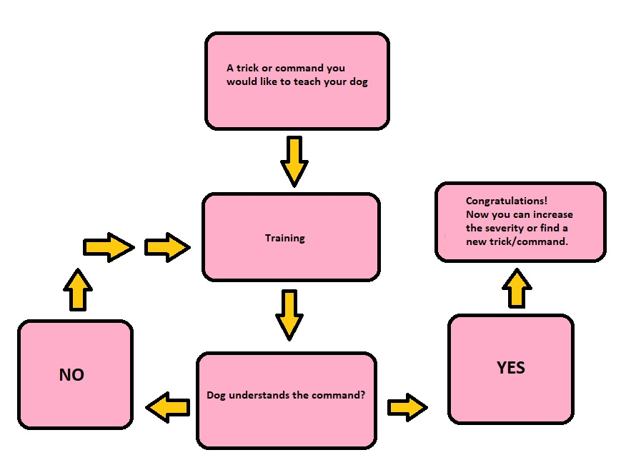
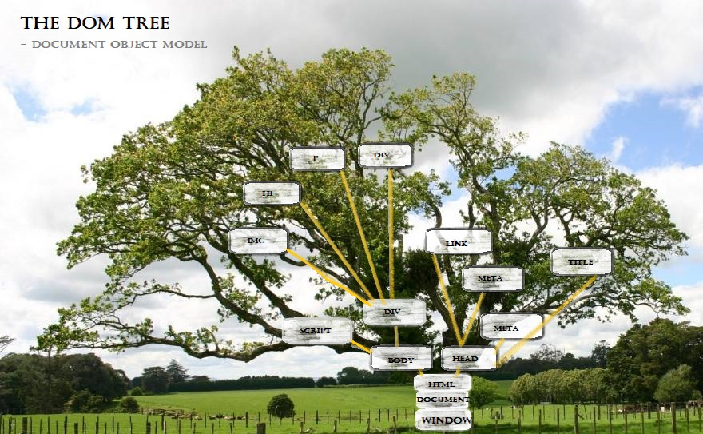
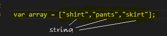
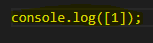
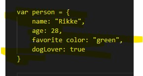
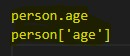

An analogy to describe the differences between HTML and CSS
If we look at a house getting build, HTML would be the foundation and the structure of the house. Without HTML we would not be able to progress further on and start adding CSS, which would be all our paint and interior decorations of the house - the aestetics.
Explain control flow and loops using an example process from everyday life.
When we are thinking of control flow and loops, these can easily be applied to every day tasks we might do to understand them a little better.
In this example I am using dog training as an example of a "control flow" from our everyday life (or at least those of us who have dogs!) aka. a pattern or an order a certain task is done,
and for our computers - a certain order they read our code.
Dog training can be repetitive and needs to be repeated over and over again, until the pup gets the trick/command.

As we can see, there is an ongoing loop here between Training -> Dog not understanding the command -> more training - this is similar to using if/else while coding.
Just like we have these kind of loops in our everyday life, we might need to create a loop while coding to ensure certain criterias are met.
Describe what the DOM is and an example of how you might interact with it.
The DOM stands for "Document Object Model" or also commonly referred to as the DOM tree which we can easily access by using a DevTool such as google's developer tool (ctrl+shift+I).
To help I have put together a little flowchart/image:

As you can see, in the tree trunk we got our window which refers to your browser window and its functions such as accessing the current URL or setting the status bar,
the document which gives you the ability to manipulate the document in your browser, and lastly your html - all of which creates a sturdy tree trunk to carry your webpage.
Next up on your website we move up to the header, which carries your meta, site title and styling links e.g. your CSS or fonts. On the other site we got the body of your website which contains the content of the website and your scripts.
Explain the difference between accessing data from arrays and objects.
In an array we will usually store a list of some kind, this could have been build up using a string, a number etc. - as long as we are wanting to store our information
within a single variable! I have created a basic example as below:

When we try to access information laying within an array, we need to consider that the first element counts as "0".

So, if we want to look at a certain element within the array in our console log, we would need to put in a number from 0 - however many elements you have put within the variable.
In this case I have used "1" which would return "pants" within the console log - to clarify, within the array our "shirt" are seen by our computer as "0",
our "pants" are seen as "1" and our "skirt" are seen as "2".
If we then look at objects, there is some difference - but initially both are still used to store data. Objects are good if you're wanting to store data about a particular thing, e.g. a person,
a car, travel distinations and the like. These are also called properties. I have made up an example below:

As you can see, I have stored a string (my name), a number (my age) and a bool (dogLover) in the object. Now, in order to access the information within the object there are two ways,
either the dot method or bracket method as you can see below:

In both instances would it pull out my age.
Explain what functions are and why they are useful.
A function is a line of code which can be called upon later in the code. Usually a function will be build up with an 'argument' - which is basically a placeholder for the properties
you're wanting to build out of a specific code. The function will always start with function, then the name of the function and our argument or placeholder in brackets. e.g. function fruits(type).
Followed by {}, in the brackets you can now advise what action the function should take. Once this has been set up you can now call on the multiple times throughout your code, by simple typing e.g. fruits(apple).
This is very useful for the developer since it makes it faster to write our code, minimise typing errors, and makes your code more readable and neat throughout.